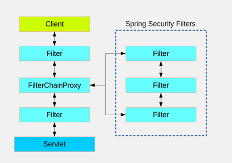

<!DOCTYPE html>


<html lang="en" >


<head>
  <meta charset="utf-8" />
    
  <meta name="description" content="sunlogo" />
  
  <meta name="viewport" content="width=device-width, initial-scale=1, maximum-scale=1" />
  <title>
    WebSecurityConfigurerAdapter类 |  sunlogo
  </title>
  <meta name="generator" content="hexo-theme-yilia-plus">
  
  <link rel="shortcut icon" href="/favicon.ico" />
  
  
<link rel="stylesheet" href="/sunlogo-blog/dist/main.css">

  
<link rel="stylesheet" href="/sunlogo-blog/css/custom.css">

  
  <script src="https://cdn.jsdelivr.net/npm/pace-js@1.0.2/pace.min.js"></script>
  
  

  

</head>

</html>

<body>
  <div id="app">
    <main class="content on">
      <section class="outer">
  <article id="post-article-1" class="article article-type-post" itemscope
  itemprop="blogPost" data-scroll-reveal>

  <div class="article-inner">
    
    <header class="article-header">
       
<h1 class="article-title sea-center" style="border-left:0" itemprop="name">
  WebSecurityConfigurerAdapter类
</h1>
 

    </header>
    

    
    <div class="article-meta">
      <a href="/sunlogo-blog/2020/04/27/article-1/" class="article-date">
  <time datetime="2020-04-27T06:50:11.000Z" itemprop="datePublished">2020-04-27</time>
</a>
      
  <div class="article-category">
    <a class="article-category-link" href="/sunlogo-blog/categories/SpringSecurity/">SpringSecurity</a>
  </div>

      
      
<div class="word_count">
    <span class="post-time">
        <span class="post-meta-item-icon">
            <i class="ri-quill-pen-line"></i>
            <span class="post-meta-item-text"> 字数统计:</span>
            <span class="post-count">750字</span>
        </span>
    </span>

    <span class="post-time">
        &nbsp; | &nbsp;
        <span class="post-meta-item-icon">
            <i class="ri-book-open-line"></i>
            <span class="post-meta-item-text"> 阅读时长≈</span>
            <span class="post-count">2分钟</span>
        </span>
    </span>
</div>

      
    </div>
    

    
    
    <div class="tocbot"></div>


    

    
    <div class="article-entry" itemprop="articleBody">
      
      

      
      <p>&emsp;&emsp;WebSecurityConfigurerAdapter类是SpringSecurity的配置类，当我们引入spring-security的时候，security默认会为<br>我们创建WebSecurityConfigurerAdapter，拦截所有的http请求，WebSecurityConfigurerAdapter优先级默认是100。在SpringSecurity<br>中，我们一般需要实现重写该类，进行自定义资源管理。</p>
<h2 id="方法介绍"><a href="#方法介绍" class="headerlink" title="方法介绍"></a>方法介绍</h2><blockquote>
<pre><code>@Configuration
@EnableWebSecurity
@EnableGlobalMethodSecurity(prePostEnabled = true)  
public class WebSecurityConfig extends WebSecurityConfigurerAdapter {  
   @Override  
   public void configure(AuthenticationManagerBuilder auth) throws Exception {  
     // 认证管理器配置方法  用来配置认证管理器AuthenticationManager，UserDetails相关的都归它管。包括 PasswordEncoder密码机**
   }  
   @Override  
   public void configure(HttpSecurity http) throws Exception {  
     //安全过滤器链配置方法   这个方法是我们最常用的，用来配置HttpSecurity,HttpSecurity用于构建一个安全过滤器链 SecurityFilterChain。
   }  
   @Override  
   public void configure(WebSecurity web) throws Exception {  
      //核心过滤器配置方法   这个用来配置WebSecurity。*待研究*  
   }  
 }  </code></pre></blockquote>
<h3 id="HttpSecurity配置"><a href="#HttpSecurity配置" class="headerlink" title="HttpSecurity配置"></a>HttpSecurity配置</h3><p>&emsp;&emsp;一般来讲，WebSecurityConfigurerAdapter类我们用来配置安全过滤器链配置最多，所以这里先记录下HttpSecurity配置<br></p>
<h4 id="默认配置"><a href="#默认配置" class="headerlink" title="默认配置"></a>默认配置</h4><blockquote>
<pre><code>protected void configure(HttpSecurity http) throws Exception {
    logger.debug(&quot;Using default configure(HttpSecurity). If subclassed this will potentially override subclass configure(HttpSecurity).&quot;);

    http
        .authorizeRequests()
            .anyRequest().authenticated()
            .and()
        .formLogin().and()
        .httpBasic();
}</code></pre></blockquote>
<h4 id="API"><a href="#API" class="headerlink" title="API"></a>API</h4><table>
<thead>
<tr>
<th>方法</th>
<th align="center">说明</th>
</tr>
</thead>
<tbody><tr>
<td>openidLogin()</td>
<td align="center">用于基于OpenId的验证</td>
</tr>
<tr>
<td>headers()</td>
<td align="center">将安全表头添加到响应，比如说简单的XSS保护</td>
</tr>
<tr>
<td>cors()</td>
<td align="center">配置跨域资源共享(CORS)</td>
</tr>
<tr>
<td>sessionManagement()</td>
<td align="center">允许配置会话管理</td>
</tr>
<tr>
<td>portMapper()</td>
<td align="center">允许配置一个PortMapper(HttpSecurity#getSharedObject(class))),其他提供SecurityConfigurer的对象使用PortMapper从HTTP重定向到HTTPS或者从HTTPS重定向到HTTP,默认情况下，SpringSecurity使用一个PortMapperImpl映射HTTP端口到HTTPS端口8443，HTTP端口80到HTTPS端口443</td>
</tr>
<tr>
<td>jee()</td>
<td align="center">配置基于容器的预认证。 在这种情况下，认证由Servlet容器管理</td>
</tr>
<tr>
<td>x509()</td>
<td align="center">配置基于x509的认证</td>
</tr>
<tr>
<td>rememberMe</td>
<td align="center">允许配置“记住我”的验证</td>
</tr>
<tr>
<td>authorizeRequests()</td>
<td align="center">允许基于使用HttpServletRequest限制访问</td>
</tr>
<tr>
<td>requestCache()</td>
<td align="center">允许配置请求缓存</td>
</tr>
<tr>
<td>exceptionHandling()</td>
<td align="center">允许配置错误处理</td>
</tr>
<tr>
<td>csrf()</td>
<td align="center">添加 CSRF 支持，使用WebSecurityConfigurerAdapter时，默认启用</td>
</tr>
<tr>
<td>logout()</td>
<td align="center">添加退出登录支持。当使用WebSecurityConfigurerAdapter时，这将自动应用。默认情况是，访问URL”/ logout”，使HTTP Session无效来清除用户，清除已配置的任何#rememberMe()身份验证，清除SecurityContextHolder，然后重定向到”/login?success”</td>
</tr>
<tr>
<td>anonymous()</td>
<td align="center">允许配置匿名用户的表示方法。 当与WebSecurityConfigurerAdapter结合使用时，这将自动应用。 默认情况下，匿名用户将使用org.springframework.security.authentication.AnonymousAuthenticationToken表示，并包含角色 “ROLE_ANONYMOUS”</td>
</tr>
<tr>
<td>formLogin()</td>
<td align="center">指定支持基于表单的身份验证。如果未指定FormLoginConfigurer#loginPage(String)，则将生成默认登录页面</td>
</tr>
<tr>
<td>oauth2Login()</td>
<td align="center">根据外部OAuth 2.0或OpenID Connect 1.0提供程序配置身份验证</td>
</tr>
<tr>
<td>requiresChannel()</td>
<td align="center">配置通道安全。为了使该配置有用，必须提供至少一个到所需信道的映射</td>
</tr>
<tr>
<td>httpBasic()</td>
<td align="center">配置 Http Basic 验证</td>
</tr>
<tr>
<td>addFilterBefore()</td>
<td align="center">在指定的Filter类之前添加过滤器</td>
</tr>
<tr>
<td>addFilterAt()</td>
<td align="center">在指定的Filter类的位置添加过滤器</td>
</tr>
<tr>
<td>addFilterAfter()</td>
<td align="center">在指定的Filter类的之后添加过滤器</td>
</tr>
<tr>
<td>and()</td>
<td align="center">连接以上策略的连接器，用来组合安全策略。实际上就是”而且”的意思</td>
</tr>
</tbody></table>

      
      <!-- reward -->
      
    </div>
    
    
      <!-- copyright -->
      
    <footer class="article-footer">
      
          
<div class="share-btn">
      <span class="share-sns share-outer">
        <i class="ri-share-forward-line"></i>
        分享
      </span>
      <div class="share-wrap">
        <i class="arrow"></i>
        <div class="share-icons">
          
          <a class="weibo share-sns" href="javascript:;" data-type="weibo">
            <i class="ri-weibo-fill"></i>
          </a>
          <a class="weixin share-sns wxFab" href="javascript:;" data-type="weixin">
            <i class="ri-wechat-fill"></i>
          </a>
          <a class="qq share-sns" href="javascript:;" data-type="qq">
            <i class="ri-qq-fill"></i>
          </a>
          <a class="douban share-sns" href="javascript:;" data-type="douban">
            <i class="ri-douban-line"></i>
          </a>
          <!-- <a class="qzone share-sns" href="javascript:;" data-type="qzone">
            <i class="icon icon-qzone"></i>
          </a> -->
          
          <a class="facebook share-sns" href="javascript:;" data-type="facebook">
            <i class="ri-facebook-circle-fill"></i>
          </a>
          <a class="twitter share-sns" href="javascript:;" data-type="twitter">
            <i class="ri-twitter-fill"></i>
          </a>
          <a class="google share-sns" href="javascript:;" data-type="google">
            <i class="ri-google-fill"></i>
          </a>
        </div>
      </div>
</div>

<div class="wx-share-modal">
    <a class="modal-close" href="javascript:;"><i class="ri-close-circle-line"></i></a>
    <p>扫一扫，分享到微信</p>
    <div class="wx-qrcode">
      
    </div>
</div>

<div id="share-mask"></div>
      
      
  <ul class="article-tag-list" itemprop="keywords"><li class="article-tag-list-item"><a class="article-tag-list-link" href="/sunlogo-blog/tags/SpringSecurity/" rel="tag">SpringSecurity</a></li></ul>


    </footer>

  </div>

  
  
  <nav class="article-nav">
    
      <a href="/sunlogo-blog/2020/04/28/interview-Questions-1/" class="article-nav-link">
        <strong class="article-nav-caption">上一篇</strong>
        <div class="article-nav-title">
          
            面试题一
          
        </div>
      </a>
    
    
      <a href="/sunlogo-blog/2020/04/16/jvm-Structure/" class="article-nav-link">
        <strong class="article-nav-caption">下一篇</strong>
        <div class="article-nav-title">Jvm内存模型及介绍</div>
      </a>
    
  </nav>


  

  
  
<!-- valine评论 -->
<div id="vcomments-box">
    <div id="vcomments">
    </div>
</div>
<script src="//cdn1.lncld.net/static/js/3.0.4/av-min.js"></script>
<script src='https://cdn.jsdelivr.net/npm/valine@1.3.10/dist/Valine.min.js'></script>
<script>
    new Valine({
        el: '#vcomments',
        app_id: '',
        app_key: '',
        path: window.location.pathname,
        notify: 'false',
        verify: 'false',
        avatar: 'mp',
        placeholder: '给我的文章加点评论吧~',
        recordIP: true
    });
    const infoEle = document.querySelector('#vcomments .info');
    if (infoEle && infoEle.childNodes && infoEle.childNodes.length > 0) {
        infoEle.childNodes.forEach(function (item) {
            item.parentNode.removeChild(item);
        });
    }
</script>
<style>
    #vcomments-box {
        padding: 5px 30px;
    }

    @media screen and (max-width: 800px) {
        #vcomments-box {
            padding: 5px 0px;
        }
    }

    #vcomments-box #vcomments {
        background-color: #fff;
    }

    .v .vlist .vcard .vh {
        padding-right: 20px;
    }

    .v .vlist .vcard {
        padding-left: 10px;
    }
</style>

  

  
  
  

</article>
</section>
      <footer class="footer">
  <div class="outer">
    <ul class="list-inline">
      <li>
        &copy;
        2015-2020
        sunlogo
      </li>
    </ul>
    <ul class="list-inline">
      <li>
        
      </li>
      
      <li>
        <!-- cnzz统计 -->
        
      </li>
    </ul>
  </div>
</footer>
      <div class="float_btns">
        <div class="totop" id="totop">
  <i class="ri-arrow-up-line"></i>
</div>

<div class="todark" id="todark">
  <i class="ri-moon-line"></i>
</div>

      </div>
    </main>
    <aside class="sidebar on">
      <button class="navbar-toggle"></button>
<nav class="navbar">
  
  <div class="logo">
    <a href="/sunlogo-blog/"></a>
  </div>
  
  <ul class="nav nav-main">
    
    <li class="nav-item">
      <a class="nav-item-link" href="/sunlogo-blog/">主页</a>
    </li>
    
    <li class="nav-item">
      <a class="nav-item-link" href="/sunlogo-blog/archives">归档</a>
    </li>
    
    <li class="nav-item">
      <a class="nav-item-link" href="/sunlogo-blog/categories/">分类</a>
    </li>
    
    <li class="nav-item">
      <a class="nav-item-link" href="/sunlogo-blog/tags/">标签</a>
    </li>
    
    <li class="nav-item">
      <a class="nav-item-link" href="/sunlogo-blog/null">关于我</a>
    </li>
    
  </ul>
</nav>
<nav class="navbar navbar-bottom">
  <ul class="nav">
    <li class="nav-item">
      
      <a class="nav-item-link nav-item-search"  title="Search">
        <i class="ri-search-line"></i>
      </a>
      
      
      <a class="nav-item-link" target="_blank" href="/sunlogo-blog/atom.xml" title="RSS Feed">
        <i class="ri-rss-line"></i>
      </a>
      
    </li>
  </ul>
</nav>
<div class="search-form-wrap">
  <div class="local-search local-search-plugin">
  <input type="search" id="local-search-input" class="local-search-input" placeholder="Search...">
  <div id="local-search-result" class="local-search-result"></div>
</div>
</div>
    </aside>
    <script>
      if (window.matchMedia("(max-width: 768px)").matches) {
        document.querySelector('.content').classList.remove('on');
        document.querySelector('.sidebar').classList.remove('on');
      }
    </script>
    <div id="mask"></div>

<!-- #reward -->
<div id="reward">
  <span class="close"><i class="ri-close-line"></i></span>
  <p class="reward-p"><i class="ri-cup-line"></i>请我喝杯咖啡吧~</p>
  <div class="reward-box">
    
    <div class="reward-item">
      
      <span class="reward-type">支付宝</span>
    </div>
    
    
    <div class="reward-item">
      
      <span class="reward-type">微信</span>
    </div>
    
  </div>
</div>
    
<script src="/sunlogo-blog/js/jquery-2.0.3.min.js"></script>


<script src="/sunlogo-blog/js/lazyload.min.js"></script>


<script>
  try {
    var typed = new Typed("#subtitle", {
      strings: ['面朝大海，春暖花开', '愿你一生努力，一生被爱', '想要的都拥有，得不到的都释怀'],
      startDelay: 0,
      typeSpeed: 200,
      loop: true,
      backSpeed: 100,
      showCursor: true
    });
  } catch (err) {
  }

</script>


<script src="/sunlogo-blog/js/tocbot.min.js"></script>

<script>
  // Tocbot_v4.7.0  http://tscanlin.github.io/tocbot/
  tocbot.init({
    tocSelector: '.tocbot',
    contentSelector: '.article-entry',
    headingSelector: 'h1, h2, h3, h4, h5, h6',
    hasInnerContainers: true,
    scrollSmooth: true,
    scrollContainer: 'main',
    positionFixedSelector: '.tocbot',
    positionFixedClass: 'is-position-fixed',
    fixedSidebarOffset: 'auto'
  });
</script>


<script src="https://cdn.jsdelivr.net/npm/jquery-modal@0.9.2/jquery.modal.min.js"></script>
<link rel="stylesheet" href="https://cdn.jsdelivr.net/npm/jquery-modal@0.9.2/jquery.modal.min.css">
<script src="https://cdn.jsdelivr.net/npm/justifiedGallery@3.7.0/dist/js/jquery.justifiedGallery.min.js"></script>

<script src="/sunlogo-blog/dist/main.js"></script>


<!-- Root element of PhotoSwipe. Must have class pswp. -->
<div class="pswp" tabindex="-1" role="dialog" aria-hidden="true">

    <!-- Background of PhotoSwipe. 
         It's a separate element as animating opacity is faster than rgba(). -->
    <div class="pswp__bg"></div>

    <!-- Slides wrapper with overflow:hidden. -->
    <div class="pswp__scroll-wrap">

        <!-- Container that holds slides. 
            PhotoSwipe keeps only 3 of them in the DOM to save memory.
            Don't modify these 3 pswp__item elements, data is added later on. -->
        <div class="pswp__container">
            <div class="pswp__item"></div>
            <div class="pswp__item"></div>
            <div class="pswp__item"></div>
        </div>

        <!-- Default (PhotoSwipeUI_Default) interface on top of sliding area. Can be changed. -->
        <div class="pswp__ui pswp__ui--hidden">

            <div class="pswp__top-bar">

                <!--  Controls are self-explanatory. Order can be changed. -->

                <div class="pswp__counter"></div>

                <button class="pswp__button pswp__button--close" title="Close (Esc)"></button>

                <button class="pswp__button pswp__button--share" style="display:none" title="Share"></button>

                <button class="pswp__button pswp__button--fs" title="Toggle fullscreen"></button>

                <button class="pswp__button pswp__button--zoom" title="Zoom in/out"></button>

                <!-- Preloader demo http://codepen.io/dimsemenov/pen/yyBWoR -->
                <!-- element will get class pswp__preloader--active when preloader is running -->
                <div class="pswp__preloader">
                    <div class="pswp__preloader__icn">
                        <div class="pswp__preloader__cut">
                            <div class="pswp__preloader__donut"></div>
                        </div>
                    </div>
                </div>
            </div>

            <div class="pswp__share-modal pswp__share-modal--hidden pswp__single-tap">
                <div class="pswp__share-tooltip"></div>
            </div>

            <button class="pswp__button pswp__button--arrow--left" title="Previous (arrow left)">
            </button>

            <button class="pswp__button pswp__button--arrow--right" title="Next (arrow right)">
            </button>

            <div class="pswp__caption">
                <div class="pswp__caption__center"></div>
            </div>

        </div>

    </div>

</div>

<link rel="stylesheet" href="https://cdn.jsdelivr.net/npm/photoswipe@4.1.3/dist/photoswipe.min.css">
<link rel="stylesheet" href="https://cdn.jsdelivr.net/npm/photoswipe@4.1.3/dist/default-skin/default-skin.min.css">
<script src="https://cdn.jsdelivr.net/npm/photoswipe@4.1.3/dist/photoswipe.min.js"></script>
<script src="https://cdn.jsdelivr.net/npm/photoswipe@4.1.3/dist/photoswipe-ui-default.min.js"></script>

<script>
    function viewer_init() {
        let pswpElement = document.querySelectorAll('.pswp')[0];
        let $imgArr = document.querySelectorAll(('.article-entry img:not(.reward-img)'))

        $imgArr.forEach(($em, i) => {
            $em.onclick = () => {
                // slider展开状态
                // todo: 这样不好，后面改成状态
                if (document.querySelector('.left-col.show')) return
                let items = []
                $imgArr.forEach(($em2, i2) => {
                    let img = $em2.getAttribute('data-idx', i2)
                    let src = $em2.getAttribute('data-target') || $em2.getAttribute('src')
                    let title = $em2.getAttribute('alt')
                    // 获得原图尺寸
                    const image = new Image()
                    image.src = src
                    items.push({
                        src: src,
                        w: image.width || $em2.width,
                        h: image.height || $em2.height,
                        title: title
                    })
                })
                var gallery = new PhotoSwipe(pswpElement, PhotoSwipeUI_Default, items, {
                    index: parseInt(i)
                });
                gallery.init()
            }
        })
    }
    viewer_init()
</script>


<script type="text/javascript" src="https://js.users.51.la/20544303.js"></script>


    
  </div>
</body>

</html>